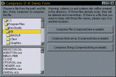

VB5 CompressZ-It Code (17K)
VB5 CompressZ-It Code (17K)
 VB6 CompressZ-It Code (19K)
VB6 CompressZ-It Code (19K)
 zLib DLL (26K)
zLib DLL (26K)
 1 Jan 2000
1 Jan 2000
First Posted

Compressing and Expanding with the Freeware zLib.DLL
Compress anything in memory with this industry-strength API
This project from Benjamin Dowse (bendowse@dingoblue.net.au) provides a reusable DLL which allows you to compress and decompress byte arrays and strings. You can compress data in memory, or using file IO in Visual Basic you can also compress files.
About zLib
ZLib is an excellent compression technique and has been re-used in many other places where a free source and patent-free method of compression is needed. One of the notable recent applications is as part of the PNG (Portable Network Graphics) file format specification. So you're in good company if you choose to use it yourself!
For more information about the zLib library, visit the zLib homepage.
How to use it
First, you need to ensure zlib.dll is unzipped into your Windows\System folder. zlib.dll is a straight Win32 DLL written in C by the ZLib authors, and does not need to be registered.
Then fire up the project group in the download. The demonstration code includes the CompressZItLib DLL and a sample application, which demos compression and decompression of in-memory data and files.
The methods of the DLL are straightforward: to compress and decompress string data, use the CompressString and DecompressString functions. To compress and decompress binary data, use the CompressData and DecompressData functions and pass in the data as a byte array. Note that when you decompress data, you need to know how large the data was before it was compressed, so if you are storing in a file you will probably want to save the size as the first thing in the file. The helper properties OriginalSize and CompressedSize allow you to query information about the data, but note that when decompressing original size is a parameter, and when compressing compressed size is only valid once the data has been compressed.